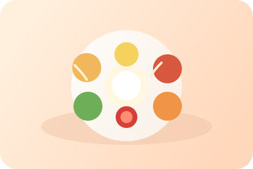
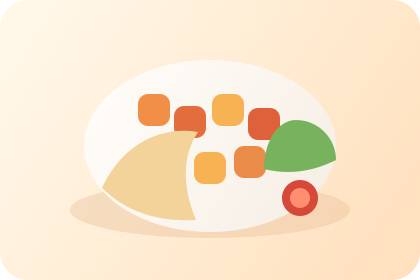

Track prep time, courier movement, and final handoff in one clean flow.
Order food with clarity
From momo and thali to curries and tandoori plates, the whole food experience feels rich, local, and premium.
Browse Nepali and Indian restaurants, discover signature dishes, follow prep and delivery progress, and place an order without friction. This page stays focused on the food product so it feels warmer, culturally relevant, and more customer-friendly.
Restaurant discovery, favorite dishes, and ordering details stay readable on every device.
Clear fees, item totals, and delivery details reduce hesitation before checkout.
Discover
Find Nepali and Indian restaurants and dishes that feel exciting, local, and easy to order
Nepali favorites
Indian curries
Momo specials
Tandoori plates
Lassi and chai
Featured restaurant
Himalayan Spice House
Comforting Nepali and North Indian dishes with reliable prep timing and a menu that works for solo meals and family ordering.
Most loved dish
Chicken momo combo
Steamed momo, achar, and a satisfying portion that feels like a real neighborhood favorite.
Delivery area
Downtown to North Side
Coverage zones stay visible so customers understand where orders move quickly and where timing may vary.
Near your location
All Nepali and Indian dishes near the searched location
Search by city area, neighborhood, or address keyword. The results below only show Nepali and Indian food options near the location you enter.
Customer favorites
Colorful Nepali and Indian meal cards that make ordering feel immediate and appetizing

Most ordered
Classic Nepali thali set
Rice, dal, tarkari, achar, and greens presented as a complete comforting meal.
Local favorite
Momo feast set
Steamed dumplings, spicy chutney, and a warm meal profile that feels unmistakably local and memorable.

Chef pick
Paneer tikka plate
Smoky paneer, naan, chutney, and masala onion sides in a plate that feels vibrant and indulgent.
Delivery flow
Customers should understand where the order is at every step
Choose restaurant and dishes
Menus, modifiers, and price details stay easy to compare before checkout.
Restaurant starts preparing
Prep timing, queue status, and item totals stay visible without confusion.
Courier picks up and delivers
Customers see progress, route movement, and estimated arrival in one place.
Quick contact
Call or message support fast when a customer needs help
Phone support
Talk directly for urgent order issues
Use a quick call for delivery delays, address problems, or pickup coordination.
Call nowLive message
Chat with support in seconds
Hi Maya, your momo order is on the way.
Please call when you arrive outside.
Noted. Driver will call before dropoff.
Support hours
Available every day
Customer support stays open from 9:00 AM to 11:00 PM for food delivery help.
Support activeReady to order
Make Nepali and Indian food delivery feel premium, colorful, and effortless.
This dedicated page gives food delivery a stronger identity with local dishes, cleaner browsing, better search, and faster customer support.
Momo and thali favorites
Fast local delivery
Quick customer support
FAST
Fresh local delivery